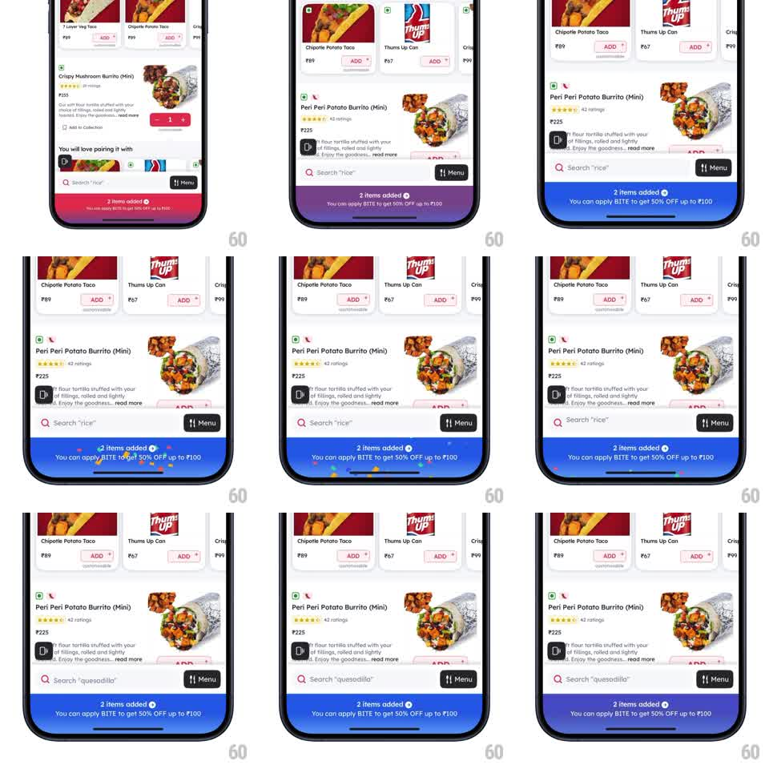

Media
Frame-by-frame

Rebuild this animation 1:1: Zomato's sticky cart bar - a gradient bar pinned above the home indicator announces "2 items added" with a checkmark, and each cart update fires a small confetti burst radiating from that checkmark icon.

Rebuild this animation 1:1: Zomato's sticky cart bar - a gradient bar pinned above the home indicator announces "2 items added" with a checkmark, and each cart update fires a small confetti burst radiating from that checkmark icon. ## Integration Integration: stack-agnostic spec - springs given as stiffness/damping, timed motions as duration + curve; map every value to your framework and animation library of choice. ## Scene Restaurant menu list (item cards with ADD buttons, search bar above). At the bottom, a full-width purple-to-blue gradient bar: white text "2 items added" with a circular check icon, and a second line "You can apply B1T1 to get 50% OFF up to Rs.100". ## Motion spec Pattern: status bar entrance + celebratory micro-burst on update. - Bar entrance (first item added): slides up from below the screen edge (spring ~320/28, ~300ms). - On each quantity update: item count text swaps with a quick vertical roll (old text up, new text in from below, ~200ms), and ~12-16 tiny confetti pieces (paper dots, brand colors) burst radially from the check icon - short travel (~40-60px), gravity pull-down, fade out over ~600ms. - The bar itself stays pinned; only the count and confetti move. ## Calibration - Confetti is a small radial puff, not a full-screen rain - it punctuates the check icon. - Keep the burst under 700ms so rapid add/remove taps can retrigger it cleanly. ## Reduced motion Count swaps with a fade; no confetti. ## Don't miss - Confetti originates at the checkmark, not the screen center. - The gradient bar never jumps or re-enters on updates - it entered once.